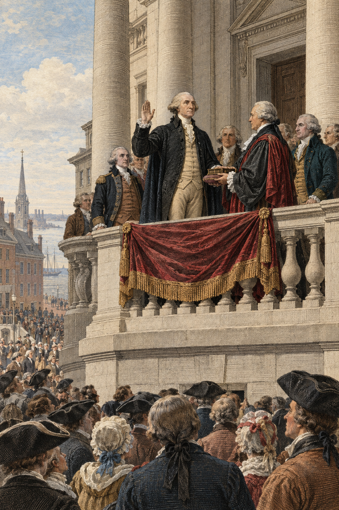
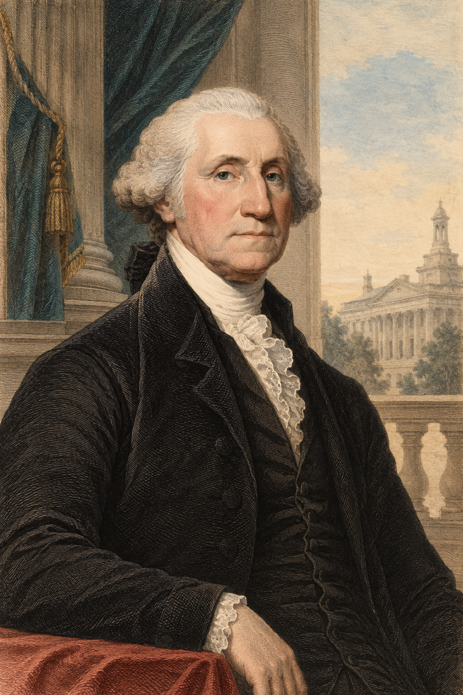

Washington Took Office Before the Presidency Had a Routine
Washington described the presidency as a burden of “weighty and untried cares.”
George Washington, First Inaugural Address
The country had a Constitution. It did not yet know how to operate one.

The Constitution Was Written Before Its Government Had Routines
The Constitution created a framework; the First Congress and the Washington administration had to make it usable.
How do you turn a written Constitution into a government people recognize, obey, and regard as legitimate?
Precedent+Capacity+Legitimacy
The Constitution Created Offices; Congress Still Had to Build the Machinery
The text
Created offices, powers, and procedures in outline.
The work
Legislators and officials had to create departments, courts, revenue routines, and precedents.
Text→Choice→Precedent→Expectation
The New Presidency Needed Dignity Without Looking Monarchical
“His Highness the President of the United States of America and Protector of the Rights of the Same”
Senate title proposal, 1789
The House preferred something simpler: President of the United States.

Washington's Awkward Senate Visit Helped Create a Treaty Routine
What the Constitution said
Treaties require Senate advice and consent.
What happened
Washington visited the Senate in person. The senators wanted documents, debate, and delay.
Washington left irritated and never again sought treaty advice in person.
Washington's Cabinet Had to Be Invented Before It Could Become a Routine
State
Thomas Jefferson
Treasury
Alexander Hamilton
War
Henry Knox
Washington slowly discovered that governing required advisers in the same room.
You’re Washington. What Do You Do?
Write one sentence • Reconstruct the decision
Washington needs advice, but no one knows the routine yet.
A. Ask the Senate in person
B. Ask the Senate in writing
C. Ask department heads together
D. Decide alone, then seek approval
Write one sentence: Which option best balances effective government with republican accountability? Why?
Congress Had to Build the Government the Constitution Only Sketched
Executive departments
State, Treasury, and War gave the president working administrative partners.
Federal courts
The Judiciary Act created district and circuit courts beneath the Supreme Court.
Revenue machinery
Duties, collectors, and customhouses gave the government a way to raise money.
Rules and officers
Oaths, appropriations, and procedures turned constitutional powers into daily work.
The Constitution supplied authority. Statutes supplied the machinery.
The Bill of Rights Helped Make the New Government Legitimate
Ratification fear
Opponents worried that the new national government could become another source of centralized power.
Madison's response
He proposed specified protections without reopening the entire Constitution.
A political settlement
Rights protections answered arguments made during ratification and taught citizens what government could not do.
Capacity preserved
The amendments reassured critics without dismantling the new government's ability to act.
Legitimacy required both effective power and visible limits on that power.
A Small Federal Government Could Still Reach Citizens
Customs
Duties, collectors, customhouses, and paperwork raised revenue.
Courts
Judges, marshals, juries, and jurisdiction made federal law actionable.
Administration
Departments processed information, appointments, treaties, and appropriations.
Force
Diplomacy and military authority gave national decisions consequences beyond paper.
The federal government was small. It was not imaginary.
1794 · Video
A Frontier Tax Revolt Tested the New Government
1794
The Whiskey Excise Made Federal Power Visible at the Still
Tax resistance becomes a constitutional test
How Is Resistance Different Under a Constitution?
Write two sentences • Compare contexts
The same word—resistance—could mean liberty or lawlessness depending on the government being resisted.
Revolutionary claim: A tax imposed from far away can be resisted as tyranny.
Constitutional claim: A law made by elected institutions must be obeyed or changed through republican politics.
Write two short sentences: Make the strongest liberty argument for resisting a tax, then name the institutional fact that makes 1794 different from resistance to Parliament.
Revolutionary Resistance Collided with Constitutional Government
Resistance tradition
Americans had celebrated resistance to unjust taxation.
Constitutional government
Federalists argued that laws made by elected institutions had to be obeyed.
The Revolution had not settled when resistance defends liberty and when it destroys self-government.
Washington Used Force to Prove Federal Law Was Enforceable
13,000
militia called out
0
major battles
2
treason convictions, then pardons
Federal power appeared, dispersed the resistance, and then stepped back from mass punishment.
The Government Won the Test—and Created New Fears
Federalist lesson
The republic could tax, enforce law, mobilize militia, and survive resistance.
Republican fear
The same capacity could become coercion against citizens who opposed national policy.
The government became stronger. So did fear of the government.
Precedent, Capacity, and Legitimacy Made the Constitution Operational
Precedent
The Constitution became real through routines people repeated.
Capacity
Departments, courts, revenue, and force gave the federal government the ability to act.
Legitimacy
Rights, restraint, and consent helped make that power rightful—and still made it frightening.
Next: can citizens organize against the people who control this power without being treated as enemies?
Optional Enrichment
The Rabbit Hole
Optional enrichment for the curious.
Interesting, but not required for quizzes, notebooks, worksheets, or exams.
The Removal Debate Added Another Executive Precedent
Optional enrichment
Another missing instruction manual problem: who could remove executive officers?
The Constitution said the president appoints officers with Senate consent.
It did not clearly say who could remove those officers.
The 1789 debate helped build a working presidency by practice, not just by text.
Big idea: constitutional meaning was being made through ordinary governing decisions.
The First Congress Left Many Operating Questions Unsettled
Optional enrichment
Even after the first laws, governing still required choices about power, money, and place.
Removal power, appointments, and departmental responsibility still had to be worked out.
Debt, public credit, and the location of the permanent capital remained contested.
Administrative details kept raising questions the Constitution had not answered.
Big idea: the Constitution needed legislation before it could function as a government.
Presidential Ceremony Kept Evolving After 1789
Optional enrichment
Washington had to look presidential without looking royal.
Ceremonies, titles, receptions, dress, and travel all mattered.
Too much grandeur suggested monarchy.
Too little dignity made the office look weak.
Big idea: political culture helped define executive power.
How Twelve Proposed Amendments Became Ten
Optional enrichment
The Bill of Rights was also a political settlement.
Congress proposed 12 amendments in 1789; the states ratified 10 in 1791.
The first two proposed articles did not become part of the Constitution at that time.
Madison wanted to protect liberties without reopening the whole Constitution.
Big idea: rights protected liberty and stabilized the new government.
Public Credit Raised a Fairness Question
Optional enrichment
Public credit had a fairness problem.
Original holders included soldiers and suppliers who sold certificates cheaply during hard times.
Current holders included speculators who bought those certificates.
Madison asked about fairness; Hamilton answered with market credibility.
Big idea: the same policy could look like justice, injustice, or survival depending on the principle you emphasized.
Assumption and the Capital Became a Political Bargain
Optional enrichment
The assumption-capital bargain
Assumption turned state debts into national obligations.
Some Virginians resisted paying for other states' debts after Virginia had already paid much of its own.
The bargain helped move the future capital to the Potomac while allowing assumption to pass.
Big idea: state-building also happened through bargaining, geography, and political trust.
How Customhouses Made Federal Power Visible
Optional enrichment
Not a giant bureaucracy, but not nothing either
Customhouses collected most federal revenue through duties on imported goods.
Collectors, surveyors, clerks, forms, ports, courts, and inspectors made federal power visible.
The early state was thin, but it could still reach commerce, debt, land, taxes, diplomacy, and war.
Big idea: institutions can be small and still matter.
Federal Claims Reached a Continent It Did Not Fully Control
Optional enrichment
Claiming territory was not the same as controlling it
Native nations still exercised sovereignty across much of the continent.
British posts and influence remained important in the Northwest.
Federal taxes, credit, diplomacy, and military capacity were connected to the problem of making national claims real.
Big idea: the new federal state was being tested far beyond Philadelphia.